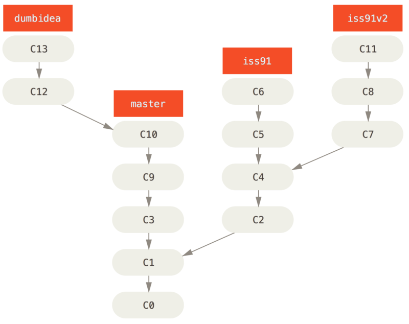

分支开发工作流
Contents
分支开发工作流#
Note
现在你已经学会新建和合并分支了，那么你可以或者应该用它们来做些什么呢？在本节，我们会介绍一些常见的利用分支进行开发的工作流程，你可以根据项目实际情况选择一种用用看。
长期分支#
许多使用 Git 的开发者都喜欢使用长期分支：
只在 master 分支上保留完全稳定的代码。
还有一些名字像 develop 平行分支，被用来做后续开发或测试稳定性 - 这些分支不必保持绝对稳定，但是一旦达到稳定状态，它们就可以被合并入 master 分支了。
可能还有一些更前沿的短期主题分支（topic branches，比如之前的 iss53 分支），它被用来在 develop 上做探索性开发，一旦相对稳定，就可以被合并入 develop 分支了。
事实上我们刚才讨论的，是随着你的提交而不断右移的指针。稳定分支的指针总是在提交历史中落后一大截，而前沿分支的指针往往比较靠前。

通常把它们想象成流水线可能更好理解一些：

这么做的目的是使你的分支具有不同级别的稳定性。当它们具有一定程度的稳定性后，把它们合并入具有更高级别稳定性的分支中。使用多个长期分支的方法并非必要，但是这么做通常很有帮助，尤其是你在一个非常庞大或者复杂的项目中工作时。
主题分支#
主题分支是一种短期分支，它被用来实现单一特性或其相关工作。
你已经在之前的 iss53 和 hotfix 主题分支中看到过这个用法：在主题分支中提交了一些更新，并且在它们合并入主干分支之后，又删除了它们。这项技术使得你的工作被分散到不同的流水线中，在不同的流水线中每个分支仅与其目标特性有关，因此，在做代码审查之类的工作时就能更加容易地看出你做了哪些改动。你可以把做出的改动在主题分支中保留几分钟、几天甚至几个月，等它们成熟之后再合并，而不用在乎它们建立的顺序或工作进度。
例子：你在 master 分支上工作到 C1，这时为了想解决一个问题新建 iss91 分支，在 iss91 上工作到 C4，然而对于那个问题你又有了新的想法，于是你再新建一个 iss91v2 分支试图用另一种方法解决那个问题，接着你回到 master 分支工作了一会，你又冒出了一个不太确定的想法，你便在 C10 的时候创建一个 dumbidea 分支，并在上面做些实验。

现在，我们假设两件事：你决定用第二个方案来解决那个问题，即使用 iss91v2 中的方案。另外，你将 dumbidea 分支拿给你的同事看过之后，结果发现这是个惊人之举。这时你可以抛弃 iss91 分支（即丢弃 C5 和 C6 提交），然后把另外两个分支合并入主干分支：

请牢记，当你做这么多操作的时候，这些分支全部都存在本地。当你新建和合并分支的时候，所有这一切都只发生在你本地的 Git 版本库中 - 没有与服务器发生交互。